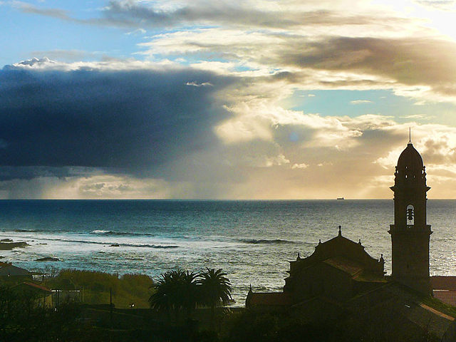
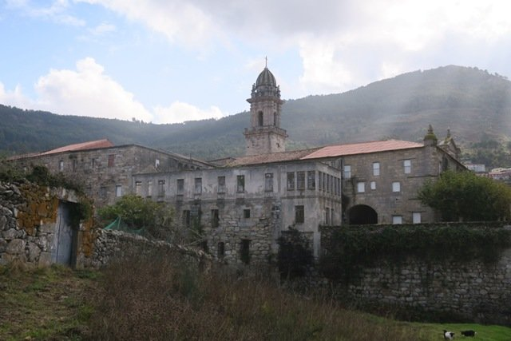
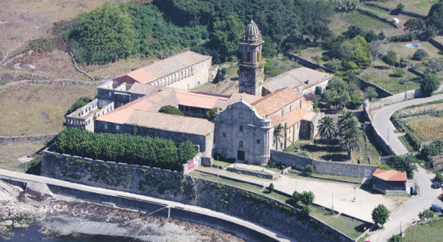
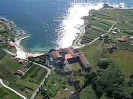

Ø
Oia
zonas para visitar
sitios a visitar en oia
es una zona turistica mas importante de galicia. es una zona obligatoria a visitar por sus interesantes valores arqueologicos, religiosos y paisajísticos




visita a guarda
portada
visite o rosal
<